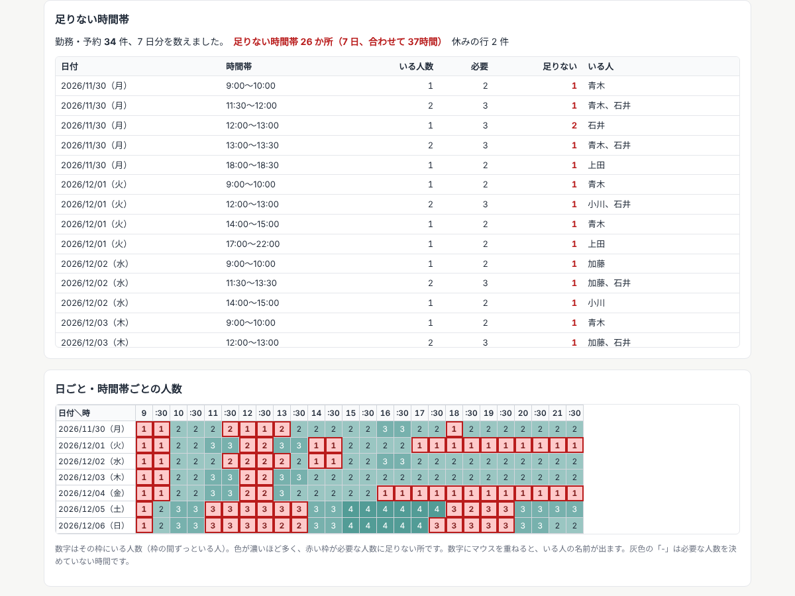

時間帯ごとの人数と不足チェック
シフト表を組んだあとに、「この日の昼は何人いる？」「夕方に1人だけの時間はない？」を、表を目で追って数えなくても確かめられるツールです。出勤・退勤の時刻（休憩も）から、日ごとに 30分ごとの人数の表を作り、決めた最低人数に足りない時間帯を一覧にします。予約の一覧から「同じ時間に何人（何組）いるか」を数えることもできます。ソフトのインストールは不要で、いつものブラウザで動きます。
お試し版はすべての機能を使えて、数える・印刷・保存は先頭30行までです。決済が終わると、そのまま製品版の画面に移動します。ブックマークしておけば何度でも使えます。

見本のデータ（小さな飲食店の1週間・6人のシフト）を数えた例。名前は説明のための架空のものです。
こんなときに
- 小さな店・介護・学童・コールセンターなどで、シフトを組んだあとに手薄な時間がないかをまとめて確かめたい
- 「平日のお昼は3人、土日は4人」のように時間帯や曜日で必要な人数が違う決まりを、全部の日に当てはめて見たい
- ホールとキッチン、看護と介護のように、職種・持ち場ごとに人数を数えたい
- 美容室・教室・貸し会議室の予約の一覧から、時間帯ごとに何人いるか、いちばん混むのは何時かを知りたい
できること
- 人数の表：日ごと（行）×時間帯（列）の表に、その時間にいる人数を出します。区切りは15分・30分・1時間、見る時間は「8:00〜22:00」のように選べます。多い所ほど色が濃く、数字にマウスを重ねると、いる人の名前が出ます
- 足りない時間帯の一覧：「9:00-22:00 2」「平日 11:30-13:30 3」「土日 17:00-20:00 4」「月水金 …」「12/24 …」のように1行ずつ書いた必要な人数と比べ、足りない時間帯を「12:00〜13:00 1人（必要 3） 2人足りない いる人：石井」の形で一覧にします。人数と必要な人数が同じまま続く時間はまとめて1行にします
- 休憩を引く：休憩の列が「12:00-13:00」でも、開始・終了の2つの列でも、その時間はいない人として数えます。1つの欄に「12:00-12:45、15:00-15:15」と2回書いてあっても読めます
- 数え方を選べる：「その枠の間ずっといる人」（9:30 出勤の人は 9:00〜9:30 の枠に数えない）か、「少しでもいる人」かを選べます
- 職種・持ち場ごと：職種の列があれば、ホールだけ・キッチンだけの人数と不足を出せます
- 夜をまたぐ勤務（22:00〜6:00）は翌朝までとして数え、「22:00〜翌6:00」のような見る時間も選べます。予約の一覧の「4名」のような人数の列も足し算できます
- 日ごとのまとめ：日ごとの実人数、いちばん多い人数と時間、必要な時間の中でいちばん少ない人数と時間、足りない枠の数、勤務の合計時間
- いろいろな書き方を読む：時刻は「9:00」「9時半」「午後1時」「0930」、日付は「2026/12/01」「12月1日(火)」「令和8年12月1日」。出勤・退勤が別の列でも、1つの列に「9:00〜17:00」でも読めます。「休」「公休」「有休」の行は休みとして数えません。読めない行は行の番号と理由つきで一覧にします
- 印刷・保存：人数の表（A4 横、足りない所は赤い枠）と足りない時間帯の一覧を印刷。人数の表・足りない時間帯・日ごとのまとめ・明細（元の表に読み取った時刻を足したもの）を CSV で保存できます
- CSV（UTF-8・Shift_JIS）と Excel ファイル（.xlsx）を読めます。Excel の表をコピーして貼り付けても使えます
できないこと（購入前にご確認ください）
- シフトを組んだり、人を割り振ったりはしません。今あるシフト表・予約の一覧を数えて、足りない所を示すところまでです（当番の割り振りは 当番表の自動作成 をお使いください）
- 読める表は「1人1日1行」（日付・氏名・出勤・退勤が1行）の形です。日付が横に並んだカレンダー形のシフト表は、そのままでは読めません（縦持ち⇔横持ち変換 で1人1日1行に直してからお使いください）
- 「休憩60分」のような長さだけの休憩は、何時にいないかが分からないため引きません（メモを出します）
- 祝日は自動で分けません。祝日だけ必要な人数が違うときは「12/31 9:00-18:00 4」のように日付の行で書いてください
- 労働時間や休憩の長さが法令や就業規則に合っているかの判断、人員配置の基準の判断はしません。数を数えるだけです
- スマートフォンでは操作しにくいため、パソコンでお使いください
Excel だけで時間帯ごとの人数を数えるなら
A列が日付、C列が出勤、D列が退勤（日付・時刻として入っている）なら、F2 から下に日付、G1 から右に「9:00」「9:30」…の時刻を並べ、G2 に
=COUNTIFS($A$2:$A$100,$F2,$C$2:$C$100,"<="&G$1,$D$2:$D$100,">="&(G$1+TIME(0,30,0)))
と入れて右と下にコピーすると、その日のその30分の間ずっといる人数が出ます（「出勤がその時刻より前か同じ、かつ退勤が30分後より後か同じ」の行を数えています）。必要な人数を別の表にして比べ、条件付き書式で色を付ければ足りない所も見えます。このツールが向いているのは、休憩を引きたい、夜をまたぐ勤務がある、時刻が「9時半」「9:00〜17:00」のように文字で入っている、曜日・時間帯で必要な人数が違う、など式が長くなるときです。
よくある質問
| どの列が日付・出勤・退勤か、自分で選ぶのですか？ | 「日付」「勤務日」「氏名」「出勤」「退勤」「シフト」「休憩」「職種」「人数」などの見出しから自動で選びます。違っていたら画面で選び直せます。 |
|---|---|
| 9:00〜9:30 の枠に、9:15 に来る人は数えますか？ | 「その枠の間ずっといる人」（はじめの設定）では数えません。「少しでもいる人」を選ぶと数えます。 |
| 必要な人数の行が重なったら？ | 同じ時間に当てはまる行が複数あるときは、下に書いた行を使います。「9:00-22:00 2」の下に「平日 11:30-13:30 3」と書けば、平日のその時間だけ3人になります。日付の行（「12/24 …」）は曜日の行より優先します。 |
| データはどこかに送られますか？ | 送られません。読み込み・計算・印刷はすべてお使いのブラウザの中で行います。区切りや必要な人数などの設定だけをブラウザに保存し、シフト表の中身は保存しません。 |
| 何行まで使えますか？ | 製品版は行数の制限はありません。2万行（30日分）の表を30分ごとに数えて1秒以内でした（当店の試験環境で計測）。画面の一覧は500行まで表示し、全部は CSV に入ります。 |
安心してお使いいただくために
- シフト表・予約の一覧はお使いのブラウザの中だけで処理し、サーバーには送信しません
- 動作環境：最新版の Chrome・Safari・Edge・Firefox（パソコン）
- 説明どおりに動かない場合は、ご購入から7日以内にご連絡いただければ返金します
同じ物の予約の重なり（ダブルブッキング）を探すなら 予約の重なりチェック、作業時間の合計なら 作業時間の集計 もあります。